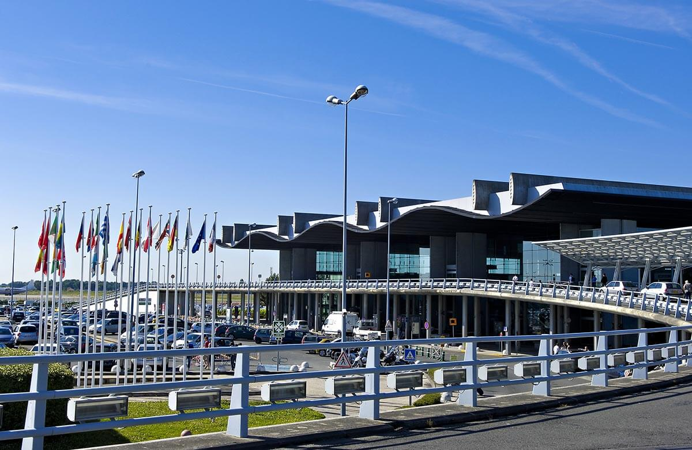

Avec une évolution du trafic de passager de 35 à 50% entre 2010 et 2015 et accueillant 7,7 millions de passagers en 2019, l’aéroport international de Bordeaux-Mérignac est le 8e aéroport français et également le 6e hors région parisienne. L'aéroport de Bordeaux-Mérignac représente de plus l'un des pôles économiques les plus importants d'Aquitaine. La plate-forme aéroportuaire compte à elle seule plus de 7 700 emplois, et abrite directement une centaine d'entreprises ou établissements publics.
|  |
Avec la mise en service du tramway fin 2003, Bordeaux s’est profondément transformée en devenant l’une des villes les plus attractives de France. Aujourd’hui la stratégie de la métropole consiste à repenser la mobilité grâce à tous les modes de déplacements : tramway, bus, vélo, marche, tout en allant vers une diminution de l’usage de la voiture en ville.
Avec 3 lignes de tramway, un système de vélo et de voitures en libre-service ou en location, un large résaux de bus ou encore un nombre important de navettes fluviales, vous trouverez à Bordeaux de nombreux moyens de vous déplacer comme bon vous semble faisant de la ville une ville dynamique et également attractive.